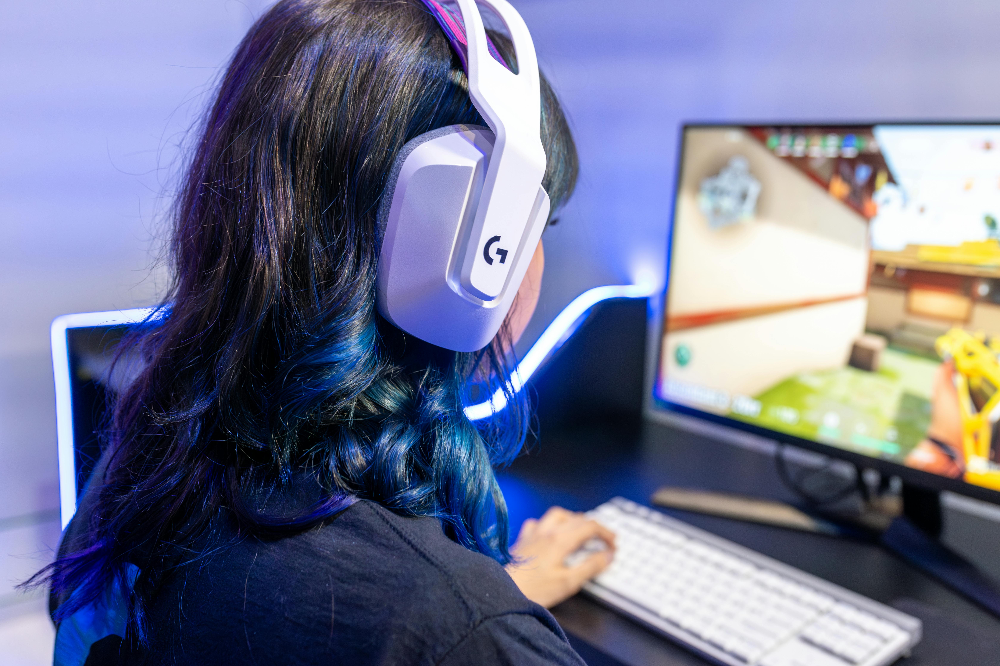
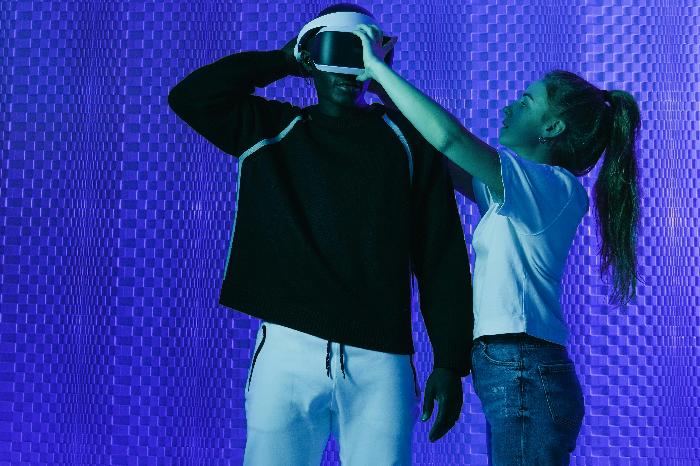
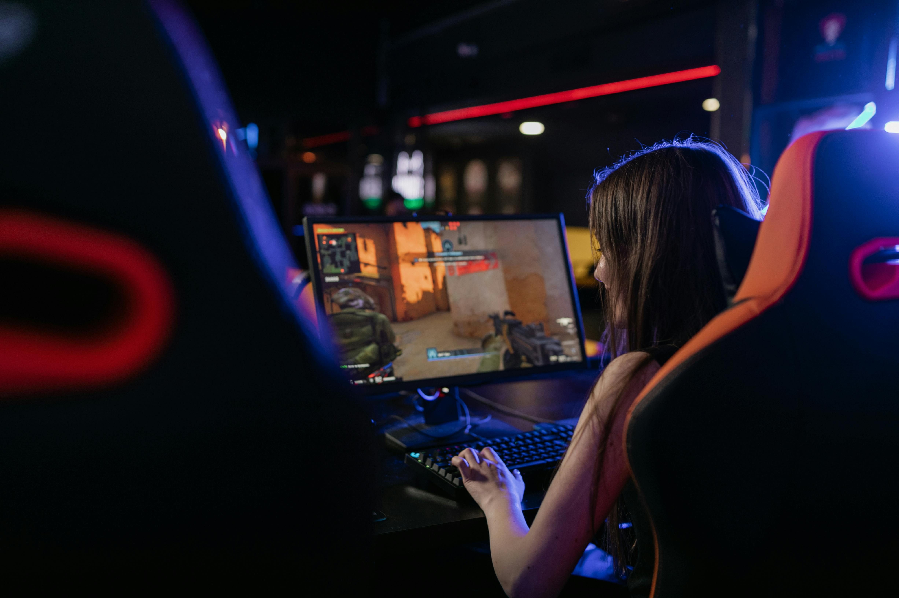

Legendas
Facilita na compreensão para surdos ou com deficiência auditiva.

Contraste
Auxilia jogadores com deficiência visual e daltonismo.

Controles
Ajusta controles para jogadores com limitações motoras.

Assistência
Torna o jogo mais fácil e acessível trazendo uma melhor experiência.

Navegação com Áudio
Ajuda jogadores cegos a orientarem-se no jogo.

Ajustes de velocidade
Permite controlar dificuldade e velocidade de jogo.

Feedback Tátil
Feedback físico para deficientes auditivos ou visuais.
Controles por Voz
Permitem interação sem o uso das mãos.

Leitura de Texto
Converte texto em áudio para deficientes visuais.